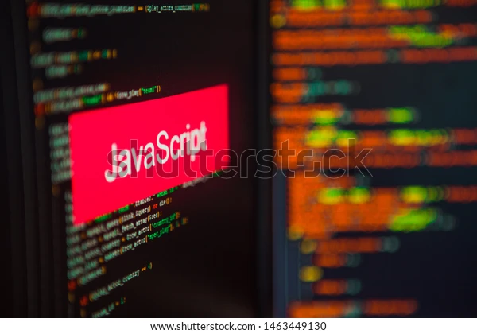

JavaScriptoften abbreviated as JS, is a programming language that conforms to the ECMAScript specification.[10] JavaScript is high-level, often just-in-time compiled, and multi-paradigm. It has curly-bracket syntax, dynamic typing, prototype-based object-orientation, and first-class functions. Alongside HTML and CSS JavaScript is one of the core technologies of the World Wide Web.[11] Over 97% of websites use it client-side for web page behavior,[12] often incorporating third-party libraries.[13] Most web browsers have a dedicated JavaScript engine to execute the code on the user's device. 
As a multi-paradigm language, JavaScript supports event-driven, functional, and imperative programming styles. It has application programming interfaces (APIs) for working with text, dates, regular expressions, standard data structures, and the Document Object Model (DOM). The ECMAScript standard does not include any input/output (I/O), such as networking, storage, or graphics facilities. In practice, the web browser or other runtime system provides JavaScript APIs for I/O.